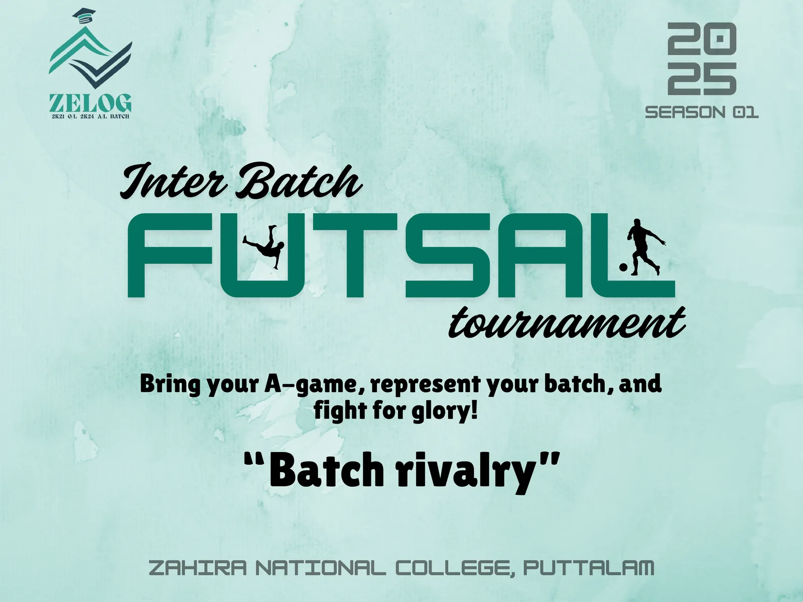

(Case)Graphic design · Event
Futsal tournament graphics
Banners and social posts for Season 01 of the Inter Batch Futsal Tournament at Zahira National College, Puttalam.

Overview
The tournament needed one visual style across everything it published, in print and on social media: the main banner, the award announcements and the sponsor thank-you.
What I made
- The main tournament banner.
- Four award posts: Runner Up, Best Player, Top Scorer and Best Keeper.
- A thank-you post for the sponsors.
Tools
- Canva